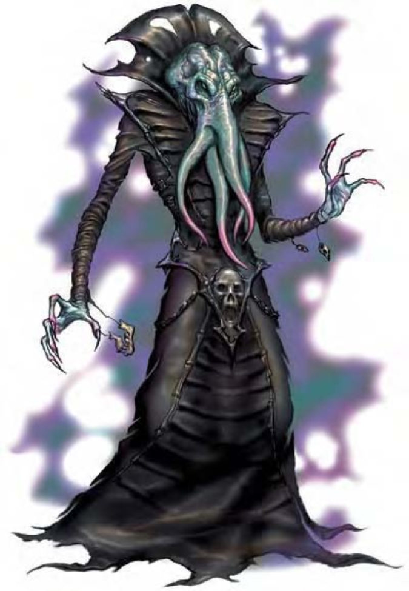

这种奇怪的人形生物约与人类同高。绿紫色皮肤具有弹性，覆满了闪亮的粘液。他们的头看起来像只四爪章鱼，肿凸的一对白眼更是令人望而生畏。
夺心魔的嘴长得像八目鳗的胃，看上去就令人反胃。即使没在吸食其他生物的脑子，嘴边也随时流满了油性的粘液。
他们不止智力高，还非常邪恶，十足是个虐待狂。夺心魔非常自私，如果遇到他，则他会不顾伙伴与侍从马上逃跑。
夺心魔的身高体重与人类相同。
夺心魔通晓地底通用语，但偏好使用心灵感应进行沟通。
夺心魔喜欢由远距离使用心灵能力战斗，特别是「心灵震爆」。如果不得已必须进行近战，夺心魔会用口部的触手牢牢抓住对方。
「心灵震爆」(类法术能力)：这是一种60英尺长的锥状灵能攻击。位于锥状区域内的生物必须通过意志检定 (DC=17)，否则被震慑3d4轮。夺心魔常用这个能力狩猎，将一两个被震慑的受害者塞进嘴里。豁免检定DC的调整值与魅力调整值相同。此能力视同四级法术。
灵能 (类法术能力)：随意使用――「魅惑怪物」(DC=17)、「侦测思想」(DC=15)、「浮空术」、「异界传送」、「暗示」(DC=16)。有效施法者等级8级。豁免检定DC的调整值与魅力调整值相同。
精通擒抱 (特异)：如果夺心魔利用触手击中小型、中型或大型对手，即可利用即时动作进行擒抱攻击，且不会引发对方借机攻击。如果擒抱成功，则可定住并将触手攀附到对手头上。夺心魔可擒抱大型以上的生物，前提是要能碰到敌人的头。
如果回合开始时，夺心魔的触手已攀附在敌人头上，他就可以进行一次擒抱检定，试着将其他触手也攀附上去。对手若通过擒抱检定或「脱逃」检定即可挣脱，但已攀附的每只触手都可让夺心魔具有+2环境加值。
夺脑 (特异)：若回合开始时，夺心魔有四只触手攀附在敌人头上，他就可以进行一次擒抱检定以吸取敌人脑子，让该生物马上死亡。这个能力对构装、元素、泥形、植物与不死生物无效。对于多头生物也不致命，例如双头巨人与多头蛇蜥。
心灵感应 (超自然)：夺心魔能够透过心灵感应与周遭100英尺范围内其他通晓语言的生物沟通。
夺心魔群居于地底城市中，每个城的规模约为200到2000位居民不等，再加上每个居民至少拥有的两个奴隶。这些奴隶完全服从主人。社群中央是长老之脑，一池咸液中浸着夺心魔已逝城民的脑。
虽然常常为了权力你争我夺，但夺心魔仍然十分喜爱合作。一小群夺心魔组成了「真调会」，专门挖掘黑暗又恐怖的秘密。真调会在很多方面与冒险者队伍并无二致，成员们都为了团队而贡献出自己的所知所长。
当有真调会难以处理的重大工作时，夺心魔就会组成教团，由一对灵吸怪发号施令。他们彼此之间还会争夺大权。
夺心魔多半从事术士或法师。
夺心魔的人物具有下列种族特性：
― +2力量、+4敏捷、+2体质、+8智力、+6感知、+6魅力。
― 黑暗视觉可达60英尺。
― 种族生命骰：夺心魔起始为8级异怪，生命骰8d8、基本攻击加值+6，强韧、反射与意志的基本豁免检定则分别是+2、+2及+6。
― 种族技能：夺心魔的异怪等级使他的技能点数成为11x (2+智力调整值)。他的本职技能为哄骗、专注、躲藏、威吓、知识 (任一)、聆听、潜行与侦察。
― 种族专长：夺心魔的异怪等级具有三个专长。
― +3天生防御加值。
― 天生武器：4触手 (1d4)。
― 特殊攻击 (见前文)：「心灵震爆」、灵能、精通擒抱、夺脑。
― 特殊能力 (见前文)：法术抗力等同25+职业等级、心灵感应100英尺。
― 母语：通用语、地底通用语。额外语言：深渊语、水族语、龙语、矮人语、精灵语、侏儒语、炼狱语、土族语。
― 适合职业：法师。
― 等级修正值：+7。
| 生命骰 | 8d8+8 (44HP) |
| 先攻 | +6 |
| 速度 | 30英尺 (6格) |
| 防御等级 | 15 (+2敏捷、+3天生)、接触12、措手不及13 |
| 基本攻击/擒抱 | +6 / +7 |
| 攻击 | 触手+8近战 (1d4+1) |
| 全力攻击 | 4触手+8近战 (1d4+1) |
| 占据/触及 | 5英尺 / 5英尺 |
| 特殊攻击 | 「心灵震爆」、灵能、精通擒抱、夺脑 |
| 特殊能力 | 法术抗力25、心灵感应100英尺 |
| 豁免 | 强韧+3、反射+4、意志+9 |
| 属性 | 力量12、敏捷14、体质12、智力19、感知17、魅力17 |
| 技能 | 哄骗+11、专注+11、交涉+7、易容+3 (扮演+5)、躲藏+10、威吓+9、知识 (任一) +12、聆听+11、潜行+10、察言观色+7、侦察+11 |
| 专长 | 战斗施法、精通先攻、武器娴熟 |
| 环境 | 地底 |
| 组织 | 单独、成双、异端审判庭 (3-5) 或教团 (3-5，加上6-10个石盲蛮族) |
| 宝藏 | 双倍标准 |
| 阵营 | 通常守序邪恶 |
| 进化 | 视人物职业而定 |
| 等级修正值 | +7 |